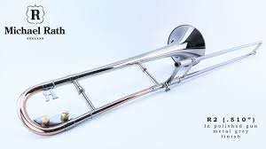
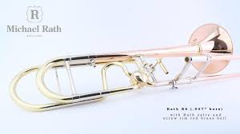
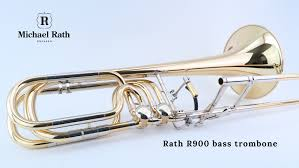

T.Bone Center
The Ultimate Trombone Players Website
The Ultimate Trombone Players Website

Michael Rath - Rath R2 Custom Small Bore (.510) Trombone comes standard with:

Michael Rath - Rath R6 Large Bore (.547) Trombone comes standard with:

Michael Rath - Rath TR180 Bass Bore (.589) Trombone comes standard with:
Production Video
How It's Made
Michael Rath Documentary